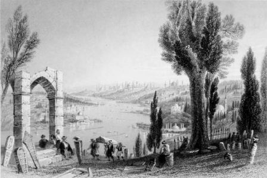

Hicretin 920 senesine kadar devletin başlıca tersanesi Gelibolu’da idi. Bizanslıların Sofyana dedikleri Kadırga limanında ancak hükümete ait kadırgalar muhafaza edilirdi. Bu liman, kâfi derecede geniş ve derin değildi. Lâkin şehrin zaptından sonra Fatih tarafından epeyce emek sarf edilerek kadırgaları barındıracak derecede tevsi edilmişti. Lâkin tersanenin Kasımpaşa’da kurulması üzerine bu liman ehemmiyetini kaybetmişti. Bir müddet sonra da artık lüzum kalmadığına karar verilmiş, liman toprakla doldurulmuş, hatta Üçüncü Sultan Selim’in valide kethüdası (kâhyası) meşhur Yusuf Ağa tarafından bir çayır haline ifrağ olunmuş (dönüştürmüş), ve bu geniş çayıra, Sultan Selim için küçük bir köşk inşa ettirilmişti.
Birinci Sultan Selim zamanında, Osmanlı ülkesinin hudutları artık tamamıyla genişlemişti.
Bu hudutları muhafaza etmek için de büyük mikyasta bir tersaneye ihtiyaç hissedilmişti. O zaman Sultan Selim, artık Gelibolu’daki tersaneyi kâfi görmiyerek oradaki inşaat tezgâhlarını söküp İstanbul’a getirtmiş, bugün, Kasımpaşa dediğimiz yerdeki tersaneyi vücuda getirmişti.
Kasımpaşa’daki Kozlucadere, Haliç’in her türlü rüzgârlarından en muhafazalı yerinde idi. Aynı zamanda Haliç, en büyük gemilerin bile barınmalarına müsait olan bir harp limanı idi. Bu itibar ile Yavuz Sultan Selim, Gelibolu’daki tersaneyi İstanbul’a naklederek Kasımpaşa’da kurmakla çok büyük bir isabet göstermişti.
Kasımpaşa o tarihte, meşe fundalıklarından mürekkep küçük bir çalılık halinde idi. Bu çalılık derhal temizlenmiş, orada kerestecilik, demircilik, marangozluk, halatçılık, yelkencilik, dokumacılık vesaireden mürekkep bir sanayi merkezi ile aynı zamanda cesim gemi inşaat tezgâhları vücuda gelmişti.
Kanuni Sultan Süleyman devrinde Osmanlı tersanesi artık tamamıyla teessüs etmiş ve büyük bir tekâmül (ilerleme) eseri baş göstermişti. Bunun ilk eseri olmak üzere, kaptan paşalara mahsus olmak üzere, divanhane–i kebir adı verilen, ilk Bahriye Nezareti binası inşa edilmişti.
Sultan Süleyman devrinin kaptan paşalarından Güzelce Kasım Paşa’nın himmetiyle yapılan bu bina ile onun civarında inşa olunan bir cami orada derhal küçük bir kasaba teşekkül etmesi ile neticelendi. Ve halkı kâmilen (tamamen) kahraman Türk denizcilerinden mürekkep olan bu kasabanın mahallelerine bir müddet sonra Piri Paşa, Ayas Paşa, Küçük Piyale Paşa, Büyük Piyale Paşa gibi Türk denizliğinin ebediyen iftihar edeceği en namdar kaptan paşaların isimleri verildi.
Kozluca ismindeki küçük derenin iki yakasına yapılmış olan Kasımpaşa kasabasının manzarası güzel, sahası çok müsaitti. Onun için kasaba, pek az bir zaman zarfında bir hayli genişledi.
Bizanslılar zamanında Haliç sahillerinin bir kısmı, Ayvansaray’a kadar Konstantaniye surları kadar muhat (kuşatılmış) olduğu halde sahiller tamamıyla boş araziden mürekkepti. Bu sahiller, son derece latifti. Her tarafında asırlar görmüş çınarlar, serviler, akasyalar, rengârenk çiçekler açan salkımlar ve çitlembik ağaçları yükselmişti. Kasımpaşa kasabasının teşekkül etmesi, bu bomboş sahillerin de çarçabuk umran kesbetmesine sebebiyet verdi.
Türkler esasen İstanbul surlarının yüksek duvarları arkasında oturmaya razı olacak derecede korkak değillerdi. Az bir zaman geçmeden, Kasımpaşa kasabasının üst tarafında Hasköy, Sütlüce ve karşı sahilde de Ayvansaray, Eyüp, Bahariye, Karaağaç semtlerinde de büyüklü küçüklü bir takım binalar yükselmişti.
Fatih devrinin ricalinden Handan Ağa, Hasköy ile Kasımpaşa arasında bir camii yaptırmıştı. Bu camiin civarında, 4’üncü Sultan Mehmet tarafından tersane köşkü adı verilen bir saray yaptırınca, o civarındaki ümran hareketleri de arttıkça artmış, her tarafta sultan sarayları, devlet ve saray erkânına mahsus saraylar yükselmeye başlamıştı.
1038 senesinde, Tersane sarayında yangın zuhur etmişti. Hasbahçe bostancıları, bin müşkülat ile yangını söndürebilmişler, büyük para mükâfatlarıyla taltif edilmişlerdi. Bu tarihi bina, bir hayli istihale (değişim) geçirmişti. Üzerinden asırlarca zaman geçtiği için, adeta bir harabe haline gelmişti. Birinci Sultan Hamit devrinde sadrazam Koca Yusuf paşa tarafından tamir ettirilen bu sarayda, 3’üncü Selim bir müddet ikamet etmiş ise de birkaç sene sonra yıktırılmış arsası gittikçe genişleyen tersaneye kalbedilmişti (dönüştürmüştü). Enkazından da tersane eminlerine mahsus olmak üzere yeni bir sahilhane inşa ettirilmişti.
Bu sarayın arkasında, Aynalıkavak mevkiinde küçük bir saray daha vardı. Bahar mevsiminde padişahlar tebdil suretiyle bu saraya geliyorlar, birkaç gün ikamet ederek mevkiin letafetinden istifade ediyorlardı.
1241 senesinde bu saray, ikinci Sultan Mahmut tarafından tamir edilmiş, bir takım ilavelerle genişletilmişti.
Haliç’in en revnaklı (parlak) zamanı, 3’üncü Sultan Ahmet devri idi. Bu devirde, bütün sahil, sultan sarayları ve devlet erkânının yalılarıyla parlak bir mamure haline gelmişti.
Haliç’in son noktasında bulunan Kâğıthane deresi çok bedii manzaralara malikti. Rengârenk salkımlar ve ulu akasyalar arasından akan bu küçük derenin iki tarafındaki çayırlıklara birçok saraylar inşa edilmişti.
3’üncü Sultan Ahmet, Kâğıthane’yi çok severdi. Veziri ve sevgili damadı Nevşehirli İbrahim Paşa’da da onun zevkine hizmet etmeyi iş güç edinmişti. Kâğıthane’nin imarına başladı. İnşaata o kadar ehemmiyet verilmişti ki ameleler, Ramazan ve Bayram geceleri bile çalışmışlardı.
İbrahim Paşa, evvela derenin mecrasını değiştirtmiş, Kumbarhaneden sekiz yüz zıra[10] mesafe üzerine, iki tarafı mermer rıhtımlarla müzeyyen yeni bir mecra vücuda getirmişti.
Sonra, iki mecranın kenarına otuz sütun muhteşem bir saray yaptırmıştı. Bu sarayın önünde gayet cesim bir havuzla çağlayanlar, ağızlarından sular akan som mermerden arslan ve ejderhalar vardı. Bunların aralarında fıskiyeler de, semalara doğru billur gibi sular fışkırtıyorlardı.
İbrahim Paşa, yalnız bu sarayı yaptırmakla kalmamıştı. Bunun etrafına daha bir takım küçük ve zarif köşkler de yaptırmış, bunların çevrelerini, en nefis lale bahçeleriyle donatmıştı.
Bu suretle Kâğıthane, artık İstanbul’un emsali görülmemiş bir seyir yeri halini almıştı. Şehir halkı, gruplar halinde buraya giderek çadırlar kuruyorlar, ocaklar yakıyorlar, yemekler pişirerek, günlerce yiyip içerek neşe ve şetaret (şenlik) içinde vakit geçiriyorlardı.
Kâğıthane, birdenbire ehemmiyet kesbetmişti. Karaağacın karşısındaki Bahariye’den itibaren içerilere doğru iki tarafı o devrin ricaline bir yazlık yeri haline iktisap eylemişti. Kısa bir zaman zarfında buraya yapılan köşklerin miktarı yüz yirmiyi geçmişti.
Karaağaç’ta, eskiden de büyük bir saray vardı. Bu sarayı, Kanuni Sultan Süleyman’ın baş defterdarı İbrahim Efendi yaptırmıştı. Fakat üzerinden geçen asırlar, bu sarayı harap etmişti. Birinci Sultan Ahmet zamanında, yeni baştan tamir edildi. O tarihten itibaren padişahlar, ilk ve son baharlarda buraya gelerek bir hafta, on gün kadar ikamet etmeyi adet edinmişlerdi.
İkinci Sultan Mahmut Asakiri Mensureyi tesis ve bu askerler için orada bir kışla yaptırmaya karar verdiği zaman bu sarayı yıktırarak taşlarından istifade etti. Arsası da, halkın gezip eğlenmesine tahsis edildi.
Bahariye Mevlevihane’sinin bulunduğu yerde de İbrahim Paşa bir sahil sarayı yaptırmıştı. 3’üncü Sultan Selim ile 2’inci Mahmut, mehtaplı gecelerde bu saraya gelerek birkaç gece kalırlardı.
Sultanlar ve şehzadeler, haftanın iki, üç gününü mutlaka Kâğıthane’de geçirirlerdi. Sultanlar ekseriya Kâğıthane’ye Koçu denilen muhteşem öküz arabalarıyla gelirler, şehzadeler ise, daima saray kayıklarıyla denizden gelmeyi tercih ederlerdi.
Bahariyede bulunan iplikhane kışlası vaktiyle Hançerli Sultan’ın sarayı idi. Bu Sultan, 2’inci Beyazıd’ın şehzadesi Mahmut Sultan’ın kerimesi idi. Asıl ismi Fatma olan Hançerli Sultan, 936 senesinde vefat etmiş, Eyyüp sultanın türbesi civarına defnedilmişti.
Hançerli sultanın vefatından sonra mezkûr saray Yavuz Sultan Selim’in kerimesi ve vezirlerden Lûtfi Paşa’nın zevcesi olan Şah Sultan’a intikal etmişti. Bu Sultan, Sümbül Sinan Hazretleri’nin halifesi olan Merkez Muslihiddin Efendi’nin dervişlerindendi. Bunun şükran nişanesi olmak üzere sarayın yanında bir dergâh inşa ettirilmişti.
Bu saray, bir müddet sonra 3’üncü Ahmed’in kerimesi Ayşe Sultan’ın ikametine tahsisi edildi. Takriben bir asır kadar sonra da, 3’üncü Sultan Mustafa’nın kerimesi Fatma Sultan’a geçti. Fakat harap olmuştu. Artık, tamir kabul etmiyordu. 1244 senesinde 2’inci Sultan Mahmud’un emriyle yıktırılarak arsası tersaneye devir edildi. Ve orada, harp gemilerine halat yaptırmak üzere iplikhane denilen müessese vücuda getirildi.
Sütlüce ile Karaağaç arasında büyük bir arsa vardı. Bu arsaya, 2’inci Sultan Selim’in kerimesi İsmihan Sultan için, bir saray yapılmıştı. Sonraları bu saray da harap olup gitti. Ve yeri, tersaneye terk edildi.
Sütlüce’deki Humbarhane kışlası, bir zamanlar Tıbbiye mektebi idi. Kışlanın geniş meydanlığında, öbek öbek taş gülleler istif edilmişti. Hünkâr dairesinin altındaki büyük kapının iki tarafında da, Fatih’in icat etmiş olduğu iki havan topu yerleştirilmişti. Bunlar, büyük bir dikkat ve itina ile muhafaza edilir, üzerlerindeki tozlar her gün bembeyaz tülbentlerle silinirdi.
Bizanslılar zamanında, Hasköy’den Piri Paşa’ya geçilen bir köprü vardı. Bu köprü harap olduktan sonra, İstanbul’un meşhur zenginlerinden Cezayirli Sarraf Mığırdıç tarafından bir köprü daha yaptırıldı. Ağaçtan yapılmış olan bu köprünün başı, şimdiki Ayvansaray vapur iskelesinin bulunduğu yerden başladı. Köprünün tahsildarları, her insan ve hayvandan bir ücret alırlardı.
1067 tarihinde Şeyhülislam olan Balizâde Mustafa Efendi, Sütlücedeki Murat Mollanın cesim sahilhanesinde ikamet ederdi. Defterdarın yakınındaki Ya Vedûd iskelesinin bulunduğu yer de 4’üncü Sultan Mehmed’in kerimesi Hatice Sultan’ın sarayına aitti. Sahildeki –Yalı hamamı denilen bir hamam vardı ki, bu hamamın, Hatice Sultan Sarayı’nın hamamı olduğu rivayet ediyorlardı.
Ayvansaray kapısının yakınında, Hazret–i Hâlid ile Konstantaniye’nin fethine gelmiş olan Ashab–ı Kiramdan Muhammed–ül Ensari hazretlerinin türbesine bitişik olan mektep binası ile sebili, bu Hatice Sultan bina ettirmişti. Hatice Sultan evvel musahip Mustafa Paşa ve sonra Hasan Paşa ile evlenmiştir. 1056 senesinde vefat etmiş ve Yeni cami türbesine defnedilmiştir.
Hasan Paşa, zevk ve sefahati severdi. Sarayında bir takım hanendeler, sazendeler ve rakkaseler beslerdi. Mehtabın nurları, Haliç’in durgun sularında akseden gecelerde, sallar tertip ettirip denizde gezerdi. Ve bu mehtaplı gecelerde ekseriya padişah dördüncü Sultan Mehmet’e ziyafetler çeker, top tüfek ve fişek eğlenceleri tertip ederdi.
Eyüp ile Defterdar arasında –şimdi Feshane fabrikasının bulunduğu yer– Esma ve Beyhan Sultanların sarayları idi. Bunlara çifte saraylar derlerdi. Beyhan Sultan, 1244 senesinde vefat etmişti. Hiçbir varisi olmadığı için bomboş kalan saray, 2’inci Sultan Mahmut tarafından dokuma fabrikası ittihaz edildi. Ve ilk defa olarak burada Tunus fesleri şeklinde fes yapıldığı için fabrikaya Feshane fabrikası adı verildi.
2’inci Sultan Mahmut, hemşiresi Esma Sultan’ı çok severdi. Kendisi Rami çiftliğine gittiği zaman, orada kaldığı müddet zarfında harem takımlarının en güzidelerini hemşiresinin bu sarayına misafir ederdi. Sultan Aziz bu sarayda dünyaya gelmişti.
Esma Sultan vefat ettikten sonra bu saray da Sultan Mahmud’a intikal etti. Padişah, 1256 tarihinde kızı Atiye Sultan’ı Fethi Ahmet Paşa ile evlendirerek bu sarayı ona verdi. Saray, Atiye Sultan’ın vefatına kadar onun uhdesinde kaldıktan sonra miras olarak kızları Seniye ve Feride Sultanlara geçti. Lâkin bu müddet zarfında, tamir kabul etmiyecek derecede harap bir hale gelmişti. Sultan Aziz orduyu kalkındırmaya çalıştığı sırada asker işlerine tahsis edilmiş olan Feshane fabrikasını da genişletmek istedi. Ve bu harap sarayı yıktırarak arsasını fabrikaya ilave ettirdi.
Rami Çiftliği’nin sahibi, 1115 senesinde sadrazam olan Rami Mehmet Paşa idi. Rami Paşa, 2’inci Sultan Mustafa zamanında meşhur Edirne vakasında alâkadar olduğu için bu çiftlikte saklanmış, kellesini ölümden kurtarabilmişti. Bu itibar ile Eyüp Sultan sahasına dâhil bu çiftlik de, tarihi bir hatıraya malikti.
Rami Paşa’nın vefatından sonra, bu çiftlik de devlete intikal etmişti. Arazisi geniş ve oldukça zengin topraklara malikti. 2’inci Sultan Hamid’in devrine kadar, olduğu gibi terk edilmişti. Sultan Hamid devrinin ilk senelerinde, Şeyhülislam Üryanizâde Esad Efendinin ihtar ve tavsiyesi üzerine, İstanbul’da bulunan Boşnak ve Arnavut muhacirlerine verildi. Haraba yüz tutmuş olan çiftlik, bunlar tarafından imar ve ihya edildi. Orada, küçük bir köy teşkil edildi. Havasının manzarasının letafeti yüzünden, o küçük köy az zaman zarfında bir kasaba haline inkılap etti. Bu gün orada İstanbul’un en güzel sayfiyelerinden[11] biri vücuda gelmiştir.
Kâğıthane sarayları, 3’üncü Sultan Ahmet devrinin sonlarına kadar bütün revnak ve şaşaalarını muhafaza etmişlerdi. Lâkin Sultan Ahmet’in tahttan ıskat edilmesi (düşürülmesi) ve onun sevgili damadı ve veziri Nevşehirli İbrahim Paşa’nın da kanlar içinde yerlere serilmesi ile neticelenen Patrona Halil vakasında, bu felaket rüzgârı, Kâğıthane’nin üzerinden de geçti. Milyonlarca altınlar sarf edilerek vücuda getirilen o zarif ve emsalsiz saraylar asiler tarafından insafsızcasına tahrip olunarak temellerine kadar yıkıldıktan sonra, enkazı da ateşlere verilmişti. Kâğıthane’nin, bu şekilde bir harabezar (virane) halinde kalması üçüncü Sultan Selim devrine kadar devam etti. Ancak 1206 senesinde bunlardan bir kaçı yeniden inşa edildi. Sultan Selim uzun zamanlar bir yerde ikamet etmeyi sevmezdi. Sık sık ikametgâhını değiştirir, Topkapı Sarayı’ndan, Beşiktaş Sarayı’na, oradan Boğaz’daki hemşiresi Hatice Sultan’ın sarayına, Boğaz’dan Kâğıthane’ye gelerek eski sarayların yerine inşa ettirdiği sarayda ikamet ederdi. Bu sebepten dolayı, senelerce metruk bir halde kalan Kâğıthane semti, yeniden şenlenmişti.
İkinci Sultan Mahmut tahta çıktığı zaman amcasının ihyası bu eseri bir kat daha zenginleştirdi. Oradaki çağlıyanları ve Çağlıyan Sarayı’nı tamir ettirdi. Yeniden bir köşk yaptırarak buna da Çadır Köşk’ü adını verdi. Oğulları Mecit ve Aziz Efendileri orada sünnet ettirdi. Çoktan beri unutulmuş olan Kâğıthane âlemlerine, halk tarafından yeni bir rağbet husule geldi.
İlkbahar mevsimlerinde Padişah, buraya göç ediyordu. Hanedan azasından bazı sultan ve şehzadeleri de arkasından sürüklüyordu. Ekseriya mevcut olan köşkler kâfi gelmiyor, saray halkı çadırlarda ikamet ediyordu.
Derenin kenarındaki akasyaların ve salkım söğütlerin yeşil gölgelerinde, rengârenk feraceler giymiş olan harem takımlarının büyük bir zevk ve sürur içinde eğlendikleri görülüyor, Mehtaplı gecelerde zurna ve nakkâre seslerinin semalara doğru yüksekliği işitiliyordu.
Mehtaplı bir gecede, harem takımları, yine zevklerine ve eğlencelerine dalmışlardı. Ayın ışığında, billur gibi pırıldayan çağlayan sularında yıkanıyorlardı. Birdenbire kulakları tırmalayan:
— İmdat cankurtaran yok mu?Diye kadın feryatları yükselmeye başladı.
Dilber cariyelerden biriyle küçücük bir çocuk kadar cüsseye malik olan bir saray cücesi, akıntıya kapılmışlardı. İkisi de yüzmek bilmiyorlardı. Feryatları duyanlar, onları kurtarmaya koşmuşlardı. Lâkin buna muktedir olamamışlar, o dilber cariye ile küçük cüce birkaç dakika zarfında boğulmuşlardı.
Vaka, bütün saray halkı üzerinde çok fena bir tesir husule getirmişti. Sultan Mahmut, ertesi gün derhal göç emri vermiş, artık bir daha Çağlayan Sarayı’na ayak basmak bile istememişti. İşte bu vaka, Kâğıthane’nin ikinci defa olarak gözden düşmesine sebebiyet vermişti.
Silahtarağa’nın yanındaki –bugün bile temelleri görünen– büyük çiftlik binası, İkinci Sultan Mahmud’un kerimesi ve Mehmet Ali Paşa’nın zevcesi Adile Sultan’a aitti. Bu sultan her bahar mevsiminde bu çiftliğe gelir, baharın latif günlerini orada geçirirdi.
Kâğıthane yokuşunun alt başında da, Atiye Sultan’a ait bir köşk ve çiftlik vardı. Sultan’ın vefatından sonra burada da bazı şehzadeler –bilhassa şehzade Abdülmecit Efendi– oturmuşlardı.
Şehzade Hamit Efendi, bu çiftliği çok severdi. Bir taraftan tarlaları ektirip biçtirir, diğer taraftan da çiftliğin meralarında sürülerle koyun beslerdi. Hatta bu koyunların sütlerini şehre gönderip sattırarak bunlardan bir hayli kâr ederdi.
İşte, Eyüp Sultan’ın civar ve etrafı, yazdığımız bu saray, köşk ve çiftliklerle mürekkepti. Fakat Eyüp kasabasının bulunduğu yer de asırdan asra genişlemiş, yavaş yavaş bugünkü hale gelmişti.
İlkbaharda Eyüp civarı, adeta İstanbul’un bir mesiresi haline gelirdi. İstanbullular, Nevruza çok ehemmiyet verirlerdi O günkü, baharın girdiğine delil addederlerdi. Kışın uzun ve kasvetli günlerini kapalı yerlerde geçirmekten bunalmış olan halk, Nevruz girer girmez karadan ve denizden Eyüp Sultan’a can atarlardı. Evvelâ Hazret–i Hâlid’in türbe–i şerifisine ziyaret ettikten sonra, kırlara dağılırlar, akşama kadar yiyip içerek, gezip eğlenerek bol bol temiz hava alırlardı.
Eyüp’te başlıca iki eğlence vardı. Bunlardan birine Türbe bahçesi, diğerine de Fulya tarlası derlerdi.
Eyüp’e gidenlerin evvela çarşıdaki kebapçı dükkânlarında yoğurtlu kebap ve Alibeyköyü’nden getirilmiş olan taze kaymak yemeleri adetti. Mamafih istiyenler, evlerinden de dolmalar, helvalar, çeşit çeşit turşular getirirler servilerin altlarında ve mezarların aralarına yayılarak Haliç’in çok latif manzarası karşısında yerler içerlerdi.
Karınlarını doyuranlar, ya türbe bahçesine veyahut fulya tarlasına giderlerdi. Ancak şu var ki, Cuma günleri çok kalabalık olduğu için, Türbe bahçesi yalnız kadınlara tahsis edilirdi. O gün oraya erkekler giremezlerdi.
Kadınlar, götürdükleri büyük iplerle, ağaçlara salınacak kurarlar, büyük mikyasta kolan[12] vururlardı.
Cuma günleri erkeklerin pek çoğu Bostan iskelesindeki kahvede otururlar, oradaki büyük çardağın gölgesinde, Kâğıthane’ye gidip gelen kayıkları temaşaya koyulurlardı.
Eyüp’te, Niyet kuyusu denilen bir de kuyu vardı. Bu kuyunun sahibi, uzun boylu, simsiyah, Afrikalı bir Arap’tı. Kısmetlerinin çıkması gecikmiş olan kızlar yahut herhangi bir dileği olanlar, kuyunun sahibi olan Arap’a bir kuruş verdikten sonra, kuyuya bakarlardı. Ve bakar bakmaz, hafifçe dalgalanan suda bir şeyler görerek:
— Gördüm… Gördüm… Kısmetim, şu kıyafette bir adam.
Yahut:
“Muradım, herhalde hâsıl olacak, diye bağırırlardı.
Yani, kuyunun dibindeki suyun dalgalanmasından, kendilerine göre türlü manalar çıkarırlardı.
Bu Arap vefat ettikten sonra kuyu, zevcesi olan koyu renkli bir Habeşi’ye intikal etmişti. O da bir hayli zaman kuyuyu idare etmiş, batıl itikatlıların safderunlukları sayesinde, kendisine bir hayli, menfaat temin eylemişti.
Eski devrin birçok safdil ve cahil kimseleri, Hazret–i Hâlid’in türbe–i şerifesi ile cami etrafından da bir takım batıl itikatlara yol açmışlardı. Bu cümleden olarak, Hazret–i Hâlid’in türbe–i şerifesi önünde dört köşesinde dört küçük musluk bulunan bir şadırvan vardı. Bugüne kadar devam eden itikada göre, kısmetleri çıkmayan kızlar, şadırvanın dört tarafındaki muslukları açarlardı. Açılan muslukları, onları takip eden anneleri, akrabaları veyahut arkadaşları kapardı. Bu suretle, açılıp kapanan musluklardan, mütemadiyen sular akardı.
Sala verildiği müddet zarfında kadınlar fasılsız bir surette başlarındaki örtülerin uçlarını sallarlardı. Ve diledikleri her ne ise, onun husul bulması için dualar mırıldanırlardı.
Bazan kalabalık o kadar fazla olurdu ki, dışarıdaki büyük avluya taşardı.
Buradaki binlerce güvercinin kanat çırpmaları bunların gürültüsüne inzimam ederek (eklenerek), o uhrevi gürültü, arttıkça artardı. Bundan da anlaşılıyor ki Hazret–i Hâlid’in, Cenab–ı Hak nazarında makbul ve mübarek bir zat olduğuna ve onun vasıtasıyla Allah’a edilen duaların müstecap (kabul) olacağına dair, herkeste kökleşmiş olan bir itikat vardı.
Asıl dikkate şayan olan cihet şurasıdır ki, bu itikat yalnız Müslümanlara mahsus değildi. Ekserisi Rumlardan mürekkep olan Hıristiyanlardan birçokları da, bu duacılar kafilesine iştirak ederlerdi.
Yürüyemeyen çocuklarının koltuklarından tutarak onları yürütmeye çalışan Hıristiyan anneler az değildi.
Kısmetleri gecikmiş olan Hıristiyan kızları da şadırvanın dört köşesindeki musluklara hücum ederler, tıpkı Müslüman kızları gibi onlar da kendilerine hayırlı bir kısmet çıkması için Hazret–i Hâlid’in ruhaniyetinden istimdat eylerlerdi (yardım isterlerdi). Bu da, Resûlullah’ın mihmandarlık ve alemdarlık şerefine nail olmuş olan bu mübarek şehit için, ayrıca bir mazhariyetti.
Hazret–i Hâlid ve Eyüp Beldesi adındaki küçük bir kitapta verilen malûmatı faydalı bulunduğumuz için, bunun bazı kısımlarını iktibas ediyoruz.
Hazret–i Hâlid’in kabri bulununca, civarı şereflendi. Fatih’in adamları ve İstanbul’a göçen halkın birçoğu Hazret–i Hâlid civarında oturmaya rağbet göstermişlerdi.
Zaten Fatih’in âdeti idi. Fethettiği yerlere Anadolu’dan Türkleri ve Müslümanları getirip yerleştirirdi. Bursa’dan celbettiği Türkler de Hazret–i Hâlid’in kabri civarına yerleştirilmişti.
O zaman halkımız sanat, ticaret, ziraat ve ganimetle geçinirdi. Buraya yerleştirilen Bursalılara da, kale kapısının haricindeki büyük arazi terk edildi. Bu bomboş arazi, Hazret–i Hâlid civarına yerleştirilmiş olan halk tarafından az zaman zarfında imar edildi. Ekildi, biçildi, bostanlar ve çayırlar vücuda getirildi. Bu sayede kasaba da genişledikçe genişledi. Beş, on sene zarfında burada otuz altı mahalle teşekkül etti.
Bu mahalleler de, bir takım hayır sahipleri tarafından imar edilmişti. Hepsinde de mescitler, çeşmeler, mektepler vücuda getirilmişti. Her mescidin birer helası, küçük birer şadırvanı, bu şadırvanların abdest almak için muslukları vardır. Etraftaki kaynaklardan boş yere akan sular toplanmış, böylece faydalı yerlere kullanılmıştı.
Bir müddet bunlar bu halde kaldıktan sonra, Kanuni Sultan Süleyman zamanında bentler yaptırıldığı vakit, bir araya toplanan sulardan buraya da bir miktarı akıtıldı. Böylece, Hazret–i Hâlid’in etrafında toplananlar, su sıkıntısı çekmekten azade kaldı.
Hazret–i Hâlid’in mübarek kabri etrafında bir mamure vücut getirmeyi kararlaştıran Fatih, bununla kalmadı. Ölümlerinden sonra da Hazret–i Hâlid’in ruhaniyetinden istifade etmek istiyenlere mahsus olmak üzere o civardaki yamaçların üzerine beş yüz kadar lahid[13] yaptırdı. Bunlar, her tarafı taşlar ve harçlarla örtülmüş olan mezarlardı.
Fatih burada, fakirler için bir de imaret tesis etti. Kasabanın düşkün ve fakirlerine her gün bu imaretten çorba ve ekmekle haftada iki gün pilav verilecekti.
Fatih, bu büyük adam, yaptığı eserin bütün inceliklerini öyle bir şekilde düşünmüştü ki, kış mevsiminde, pilavın üzerine konulacak et bulunmazsa, o civarda av hayvanları vurup imarete getirmek üzere hususi surette avcılar tayin etmişti.
O devirlerde tarikatçılık çok revaçtaydı. Fatih bu ciheti de nazarı dikkate almış, muhtelif tarikat saliklerine mahsus olmak üzere birkaç tekkede inşa ettirmişti. Her tekkede küçük bir mescitle, yatacak yerleri olmayan dervişlerin ikametleri için misafir hücreleri vardı.
Artık, Eyüp Sultan unvanını almış olan bu kasabada çok mükemmel bir cemaat teşkilatı da vücuda getirilmişti.
Mahallenin ağır başlı ve yaşlılarında mürekkep olan bir heyet her akşam, yatsı namazından sonra, mahalle imamının riyaseti altında içtima ederdi. Dulların ve yoksulların vaziyetleri bu mecliste uzun uzadıya müzakereden geçirilir, onlara yardımlar edilirdi.
Çocukların tahsillerine de ehemmiyet verilmişti. Mahalle imamları, aynı zamanda bu mekteplerde muallimlik ederlerdi.
Zenginler ve hayır sahipleri, daima müesseselere, servetleri nispetinde para verirlerdi. Halkın orta halli ve hatta fakir kısmı da, ellerinden geldiği kadar yardım ederler, mahallelerindeki dulları, yoksulları, artık çalışamıyacak derecede elden ayaktan düşmüş olan kimselerin maişetlerini temin için bütün gayretlerini sarf etmekten çekinmezlerdi.
Hastalar da ihmal edilmezdi. Fatih İstanbul’u zapt eder etmez, birçok hayır müesseseleri vücuda getirmişti. Bunların bir kısmı da, hastahanelerdi. Bunlarda, aileleri ve yatacak yerleri olmayan garipler tedavi edilirlerdi. İşte Eyüp Sultan’da yapılmış olan cemaat teşkilatında düşünülen şeylerden biri de, vakit vakit bu kimsesiz hastaları ziyaret etmek, onlara yiyecek, giyecek vesaire gibi bir takım hediyeler götürmekti.
Cemaat teşkilatını idare eden heyet kasabanın inzibat ve hukuk işlerini de deruhte etmişti (üstlenmişti). Birçok münazaralar, mahkemeye düşürülmezdi. Bu meclis tarafından halledilirdi. Böylece kasaba halkının tam bir refah ve saadet için de yaşamasına son derecede ehemmiyet verilirdi.
Bugün Eyüp Sultan dediğimiz bu kasabaya, o tarihte “Belde–i Ebu Eyyüp” denilirdi. Böylece oraya, adeta bir nevi imtiyaz verilmişti. Hazret–i Hâlid’in bu imtiyazlı beldesi, hiç şüphesiz ki onun mübarek ruhaniyetinden istifade etmekteydi.
Hicretin 1000 tarihlerine doğru, İstanbul’da aşırı derecede bir zevk ve safahat başlamıştı. Lâkin Hazret–i Hâlid’in beldesi, bundan katiyen müteessir olmamıştı. Orada ahlak, namus ve şeriat daima pak ve masum kalmış, bu belde kurulduğu zaman nasıl ki sağlam temellere istinat etmişse, üzerinden asırlar geçtiği halde, yine öyle kalmıştı.
